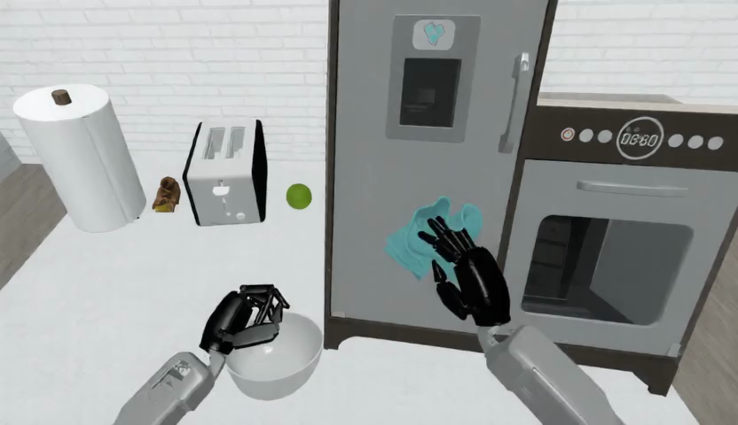
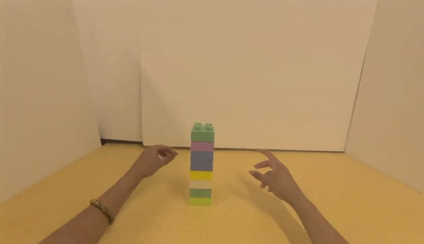
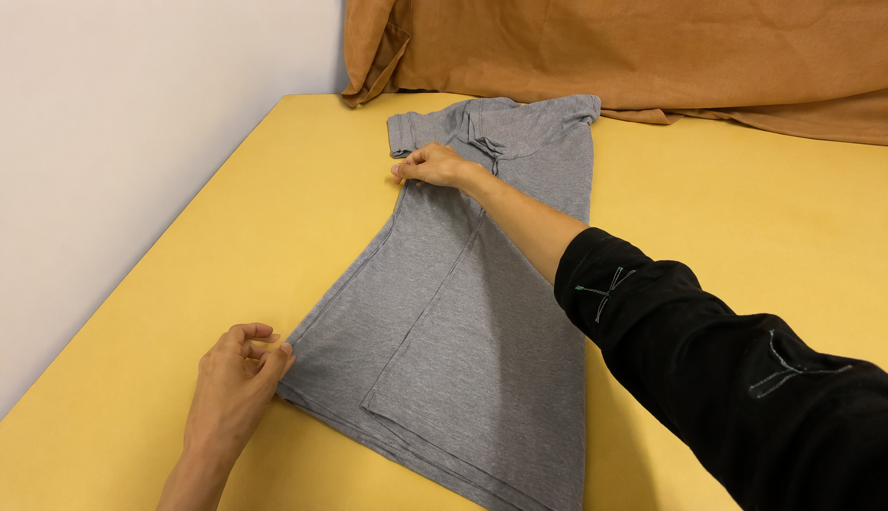
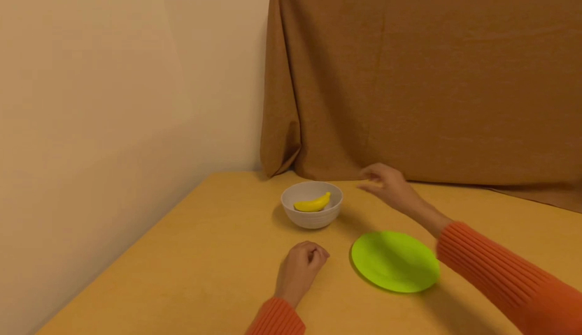
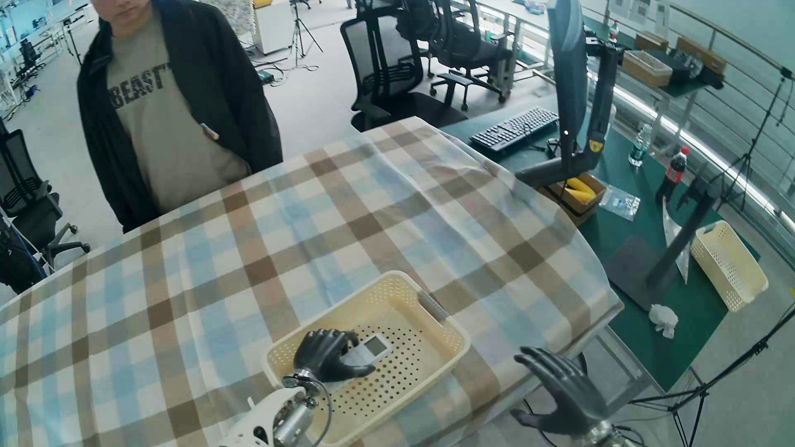
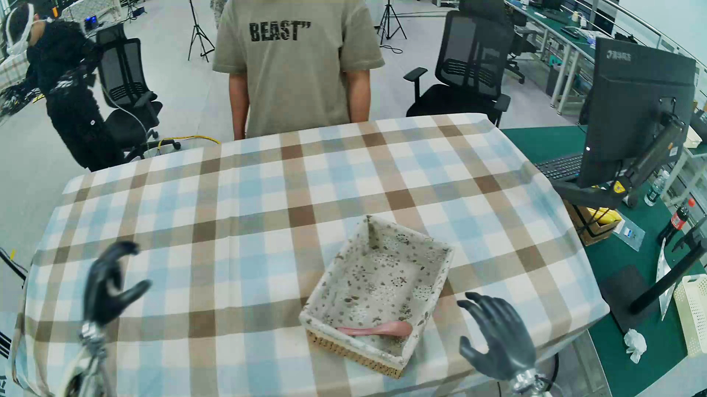
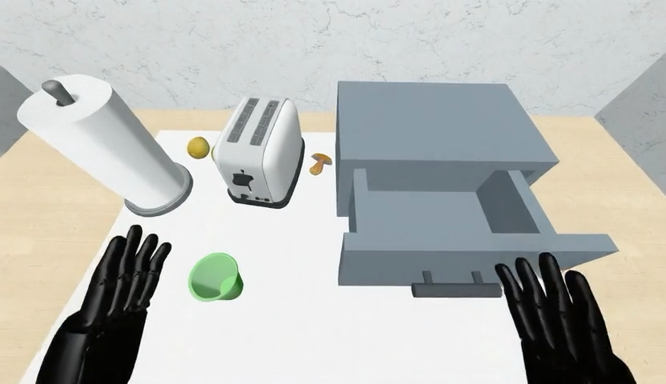

Unpaired transferNo paired human–robot clips
Cross-Embodiment World Model
AnyWorld
Human interaction, recomposed for robot learning.
Key takeaways
Cross-embodimentSame interaction, new realization
Targeted interventionMissing states · counterfactual pairs
Research thesis
From controllable experience generation to targeted policy adaptation.
AnyWorld turns human interactions into controllable robot-domain experiences. The same factorized interface scales diverse training data and synthesizes targeted supervision for policy correction and capability acquisition.
ActionCameraTarget context
01 · Controllable recomposition
Preserve the interaction. Recompose its realization.
AnyWorld preserves the underlying interaction and scales it into diverse realizations across embodiments, scenes, object configurations, lighting, and camera trajectories.
Cross-embodiment replay
The same human interaction, executed by IRON.
Action and viewpoint structure are retained while the acting body is changed.
Interaction 01Surface sweeping
Interaction 02Garment cleaning
Scene and object recomposition
Scale one interaction family across controllable worlds.
Objects, layouts, illumination, and environments can change without discarding the interaction.
A
SweepingObject and scene variation
B
Object manipulationContext and lighting variation
C
Fine-grained interactionObject and appearance variation
Explicit camera control
Compare each generated trajectory against the source viewpoint.
The reference video is shown alongside camera-controlled realizations of the same interaction.
Interaction preservedRealization scaled across controllable factorsBody · Scene · Objects · Lighting · Camera
02 · Model design
Factorized controls make interaction and realization independently composable.
Action and camera controls preserve the source interaction. A target first frame and embodiment condition specify the robot body, environment, and initial interaction geometry.
Source interactionHuman experience
ExtractAction sequenceCamera trajectory
Factorized condition fusionAnyWorld

Target visual state
Recompose into a new environment
The first frame anchors embodiment, scene layout, objects, and initial interaction geometry.
Generated experienceComposed realization
03 · Training
Learn interaction priors first, then ground them across embodiments.
Human video provides broad contact and motion priors. Unpaired mixed-domain fine-tuning binds the shared control interface to robot appearance and geometry.
Stage 1Human interaction pretraining



Learn physical interaction priors and action–camera control fidelity.
Stage 2Unpaired mixed-embodiment grounding



Associate shared interaction controls with IRON and GR1 appearance, viewpoints, and interaction geometry.
04 · Physics-aware simulation
Physics-aware rollouts capture both success and failure.
Under the same scene, controlled changes in motion geometry lead to successful target contact or a miss. The rollout reflects interaction outcomes rather than only visual appearance.
05 · World-model evidence
Stronger control without sacrificing video quality.
AnyWorld improves alignment to action, camera, and embodiment conditions while maintaining competitive visual consistency.
Overall controllabilityAverage of ActionAlign, CameraAlign, and EmbodAcc
| Method | Action | Camera | Embodiment | Avg. |
|---|---|---|---|---|
| Cosmos-Predict2.5 | 0.170 | 0.315 | 0.765 | 0.417 |
| WAN Fun-Control | 0.655 | 0.402 | 0.769 | 0.609 |
| AnyWorld | 0.659 | 0.789 | 0.886 | 0.778 |
0.942 Subject
0.949 Background
0.995 Flicker
0.996 Smoothness
06 · Real-robot policy evidence
Targeted robot-domain data can correct and extend policy behavior.
We use AnyWorld not only to scale experience, but also to construct targeted robot-domain supervision for concrete policy failures.
Correct policy shortcutsAugment missing task states
Ground instruction-conditioned controlPair language, target, and action
Improve target-domain adaptationSupporting aggregate evidence
Evidence 01 · Policy debiasing
Targeted state augmentation corrects completion shortcuts.
The baseline learns a false completion prior: when a banana is already visible inside the box, it remains stationary even though another target must still be placed. AnyWorld re-embodies the human interaction as IRON and re-scenes it into this missing robot-domain state.
Human interaction→AnyWorld robot-domain state→Policy correction
Before interventionVLA baseline
No action
Human-derived intervention
AnyWorld state augmentation
Human → IRONBanana-in-box stateSmall fine-tuning set
→
After intervention+ Human-derived AnyWorld data
Task resumed
Training-data construction
The corrective experience is synthesized from human interaction.
Human sourceInteraction prior
AnyWorld
Re-embody + re-scene
Human → IRONAdd banana inside box
→
Generated supervisionTargeted IRON rollout
Evidence 02 · Instruction-grounded control
Contrastive pairing grounds language while preserving stable robot action.
The robot data contains only single-target, single-side grasps. AnyWorld re-embodies human motion as IRON and re-scenes it with symmetric left–right targets; paired supervision then binds language to the corresponding stable robot action.
Human wrist motion→AnyWorld dual-target experience→Instruction-grounded policy
Human sourceWrist-level motion
AnyWorld transformation
→
Re-embodyHuman → IRON
Re-sceneSymmetric left/right targets
Align actionRelative EEF + robot-space projection
AnyWorld outputIRON dual-target experience
Contrastive supervision
Same observation. Opposite instruction. Corresponding action.
This pairing forces the policy to use language rather than memorized visual or state priors.
Relative EEF
Preserves local motion direction during robot fine-tuning.
Wrist-centric action
Avoids transferring incompatible human arm-scale motion.
Robot-space projection
Constrains action magnitude while retaining intent.
Contrastive pairs
Break visual and state overfitting by changing caption and action under the same observation.
Evidence 03 · Target-domain adaptation
Re-embodied rollouts provide additional policy gains.
As supporting evidence, mixing generated target-domain rollouts with robot data improves average task success in both simulation and real-robot evaluation.
RoboCasa GR118 pick-and-place tasks
+4.8 pts
IRON real robot20 grasp trials
+35.0 pts
Project
AnyWorld
Factorized Egocentric World Models for Cross-Embodiment Generalization